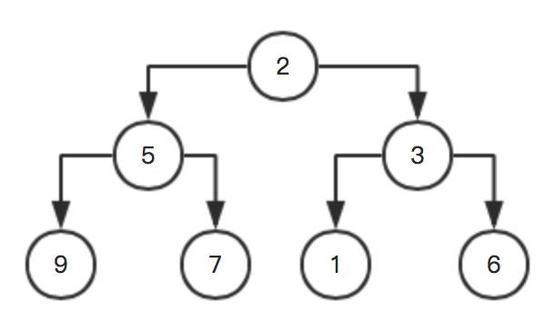

原文连接:https://www.cnblogs.com/payapa/p/11192303.html
这里先简单说下最大堆的基本性质：
- 最大堆一定是完全二叉树
- 当父节点为 n 时，左孩子为 n * 2 + 1，右孩子为 n * 2 + 2
- 当孩子为 n 时，其父节点为： (n - 1) / 2 ----> 这一点很重要，在后面初始化的时候会用到
- 父节点大于等于左孩子和右孩子，但左孩子不一定大于右孩子
了解以上基本性质之后，就可以先看一下如何对一个序列做最大堆的初始化。
最大堆的构造
思路：过程就像冒泡一样，从最序号最大的父节点开始，查看是否满足最大堆，如果不满足，则调整（调整之后，还要查看被调整的节点是否依然满足最大堆性质，如果不满足，则需要往下遍历调整，这部分在后面的举例中会有说明），如果满足，则继续查看前一个父节点是否满足，直接最终的0节点。
例如：这里有个数组：x[] = {2 5 3 9 7 1 6}，则对应树为：

该序列长度为7，最大下标为6，则最大的父节点下标就是: (6 - 1)/ 2 是2（基本性质第三条），对应的数值是3，
他的左孩子是1，右孩子是6，右孩子比父节点大，所以应该调整一下这两个节点，得到：
该节点调整完之后，再查看前一个父节点，下标为1，对应的数值为5，
他的左孩子是9，右孩子是7，不满足，所以父节点应该与左孩子进行交换，得到:
继续往前，再前面一个父节点下标为0，数值为2，左孩子是9，右孩子是6，不满足最大堆，父节点与左孩子交换，得到：

交换之前，左孩子为9，现在左孩子为2，导致这个左孩子不满足最大堆性质，因为这个左孩子的左孩子大于左孩子，所以，这里就出现了上面括号中所说的：调整完之后，还要查看被调整的节点是否依然满足最大堆的性质。
这里还要对调整之后的节点继续调整：
至此，一个最大堆就初始化完成了！
堆排序
其实，明白了最大堆怎么构造出来的之后，堆排序就很容易了。
想一想，最大堆构造出来之后，其实就直接得到了最大值：x[0]，
如果把 x[0] 与最后一个数字交换一下，然后对剩下的数字重新按之前的方法构造一下，不就找到了第二大的数字了吗？
此时第二大的数字就是x[0]，把它与刚刚参加排序的最后的一个数字交换一下，然后再对剩下的数字排序一下，就可以得到第三大的数字，
这么一直循环，就可以把当前数组排序完成了。
接着刚刚的那个例题，先把9与参与排序的最后一个数字对换，得到：
此时参与排序的，就只有：3，7，6，5，2，1。
因为x[0]被调整了，所以要查看x[0]是否依然最大堆性质，显然是不满足的，所以继续调整x[0]，得到:
x[0]与x[1]互换之后，导致被调整的x[1]又不满足最大堆，那就再调整一下：
现在整个树都满足最大堆了，也就得到了现在参与排序的最大值x[0]为7，
所以，x[0]与当前参与排序的最后一位交换，得到：
此时参与排序的，只有：1，5，6，3，2。
按照上面步骤再次循环，这里就不写了，直接放图：

上代码：
#include <stdio.h>
#include <string.h>
#include <stdlib.h>
// 打印数组
void print(int *array, int len)
{
for (int i=0; i<len; i++)
{
printf("%d ", array[i]);
}
printf("\n");
}
// 交换两个数值
void swap(int *array, int i, int j)
{
int temp = array[i];
array[i] = array[j];
array[j] = temp;
return;
}
// 对当前父节点进行排序
// 查看该父节点是否满足最大堆，如果不满足则调整子节点
void sort (int *array, int father, int len)
{
for (int lchild =father*2+1; lchild<len; lchild=father*2+1)
{
int k = lchild; // 先用k指向左孩子
int rchild = lchild + 1;
if ((rchild < len) && (array[rchild] > array[lchild]))
{
k = rchild; // 如果有右孩子，且右孩子比左孩子还大，则更新k
}
// 这里的k，指向了左右孩子中较大的那个
if (array[k] > array[father])
{
swap(array, k, father); // 交换父亲和孩子的数值
father = k; // 这里就是查看被调整之后的节点k，是否依然满足最大堆
}
else
{
break; // 当前节点不需要被调整
}
}
return;
}
int main(void)
{
int x[] = {2,5,3,9,7,1,6};
int len = sizeof(x)/sizeof(int);
print(x, len); // 先输出原始序列
// 最大子节点下标为len-1，所以它的父节点是 (len-1-1) / 2
for (int i = (len - 2)/2; i>=0; i--)
{
sort(x, i, len);
}
print(x, len); // 输出初始化之后的最大堆
for (int i=(len-1); i>0; i--)
{
swap(x, 0, i); // 把最大的一个值放到末尾，然后对剩余的数组进行排序
sort(x, 0, i);
}
print(x, len); // 输出排序之后的序列
return 0;
}
最终输出为：
2 5 3 9 7 1 6
9 7 6 5 2 1 3
1 2 3 5 6 7 9